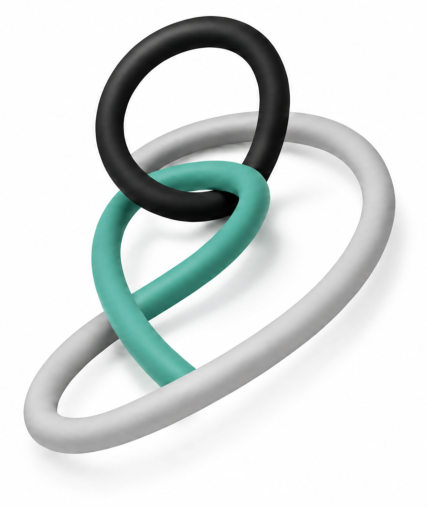

The Elastic Loop
A framework for everyone delegating work to machines.

The Elastic Loop is my working model for delegating work to AI agents without losing the plot: when to keep the loop tight, when to let it stretch, and what has to be true before you let go. It is written for engineers, but just as much for product people, designers, domain experts, the people who shape how the team works, and the leaders deciding where the investment goes. I mean that literally: half of what this framework asks of a team is judgment about results rather than code, and that judgment rarely sits with the person typing. It grew out of my talk and its write-up, How Does Truffle Taste?, and every customer conversation since has reshaped it a little; this hub is where the current state lives.
How far can you let go?
Chances are you have run a tight loop already, probably today: you asked an agent for something, read the answer, winced a little, rephrased, read again. Every turn under your eyes, every result checked before it counts, and honestly, that mode works! The question this framework keeps circling is how far that loop can stretch: first elastic, where you hand over a bounded chunk of work and check in at agreed points, then loose, where the agent works for hours or days on its own while you do something else entirely. And what, exactly, has to be true before you can let go that far?
The whole framework in one sentence
Intent opens the loop. Context grounds it. Backpressure keeps it useful. Verification closes it.
Opens. Somebody decides to delegate and states what good would actually look like.
Grounds. Context is what lets the agent stop guessing and start working from your specifics: your codebase, your customers, your constraints.
Keeps it useful. Backpressure is the word that has stuck in agentic engineering for resistance (Geoffrey Huntley and Moss Banay did much of the early work on it): anything an agent’s output has to survive before it counts. A failing test is backpressure, and so is a designer’s critique or an acceptance scenario written by someone who knows the domain; plenty of the resistance that matters never touches a compiler. (Engineers: yes, in your streams and TCP stacks the word means downstream throttling upstream. Consider this a friendly borrowing of the physics rather than the protocol.)
Closes. The outcome gets checked, and what the loop learned survives it. How expensive that check is for the human decides how many loops you can run at once; more on that on Harness.
Where does your next task belong?
Read the columns as leash: how much line the agent gets, from every turn supervised on the left to days of autonomy on the right. Read the rows as how much of the output gets held by something other than you. The bottom row has no automated checks at all. The middle row adds technical ones — tests, CI, linters. The top row adds product and domain checks on top of those, like acceptance scenarios and the judgment of people who know the field. Each step up is one more dam between the agent and what ships.
The productive story runs along the diagonal, and it is a staircase. Bottom-left is a tight loop with no automated checks, and that is perfectly safe, because you are the dam: you read every turn yourself. Top-right is a loose loop with the full stack, where the machinery holds the line you no longer can. Every step to the right pays out more line, and every step up adds a dam to compensate for the supervision you just gave up. That is the whole thesis in one shape: loosening the loop is only safe if you replace yourself with backpressure on the way. Two cells break the staircase, and both sit in the Loose column, stacked. Loose × technical-only is Slop at scale: it looks like productivity while the output drifts toward plausible, generic work, the slow collision I unpack in the next section. Loose × no-checks, right below it, is Sprawl at scale: output multiplying faster than anyone can contain it. Each is the failure of the dam that row is missing.
There is also a floor under this grid, and it rises from left to right. The floor is made of context, and the easy misreading is that a longer leash simply needs more of it. The amount a task needs is set by the task and stays the same in every column. What rises is the share of it the agent has to reach without you. In a tight loop you are the context delivery system: the knowledge lives in your head, and you feed it out one turn at a time, exactly the slice that is missing right now. A loose loop has nobody left to do the feeding. Whatever the agent cannot reach on its own — written down, current, and in a place it actually looks — it will guess, plausibly and for hours, and no amount of backpressure buys that knowledge back. That is why the floor turns hard under the Loose column: loose only opens once the context can serve itself.
Two ways this goes wrong
Sprawl is the explosion. Slop is the slow collision. Both are what happens when a search process runs without backpressure, and only one of them announces itself.
A search process, because that is what an agentic loop is, essentially: it explores a space of possible solutions and looks for one or many variants that fit your intent (see Why).
Sprawl
Output without containment: variant inflation, refactoring PRs nobody asked for, backlogs growing mold. And it happens far from any repo too: picture the team that generates thirty landing page variants in an afternoon while nobody is assigned to review even one of them. The good news is that sprawl announces itself, you can see it in CI logs and PR volume and pull people back. Think of a pressure reactor: agents generate pressure, and containment may sound like fear of the explosion, but the wall is what makes a productive reaction possible in the first place.
Slop
The stock-photo feeling: output that looks plausible, reads smoothly, and could have come from any team prompting any model on any given day (“this looks like AI output”). The everyday version is the onboarding text that sounds like every onboarding text ever written. Slop does not announce itself; the damage shows up quarters later, in the market, in usage signals, in the competitor who built the thing properly. It gets squeezed from both sides: context up front keeps the agent from starting in the statistical middle of everything it has ever read (that is the grounding), and product backpressure at the back pulls the output out of it.
Three images I keep reaching for
The truffle
Delegation runs on taste: qualitative judgment built through sensory contact with the work, the kind you only get from reading diffs, shipping mistakes, and watching real users get stuck. I reach for this one with engineers who review every turn because letting go feels like losing the craft (an honorable reflex, tight is a legitimate mode, just not the only one), and equally with everyone who judges output without building it: designers, domain experts, anyone whose “this is off” is worth more than a passing test suite.
The mirror
AI amplifies and reflects whatever organizational structure it lands in, including the parts you would rather it didn’t. This one is for leadership teams shopping for tools while the real question sits in the operating model, and for the people who own how the team works, scrum masters and coaches included, because the loop will mirror their rituals right back at them.
The pressure reactor
Backpressure is containment, and containment is what allows a productive reaction at all. This is the image for architecture and harness debates, where “guardrails” sounds like bureaucracy until you see the wall as the thing that lets you run the reactor hot.
Where to start
If you are new to all of this, start with Loops; if you never write code, Roles is your door in.
01 Loops Tight, elastic, loose: three zones and how to size the loop for the task in front of you. None of the zones outranks the others, each just comes with different preconditions. → 02 Why Build gets cheaper. Intent and evaluation become the constraint. You have probably heard this before! This is the search-space shift that turns backpressure into a discipline. → 03 Harness The backpressure layers in full: what holds agent output honest against the system, and what holds it honest against the product. → 04 Grading Outcome grading is the new specification. Tests, rubrics, scenarios, golden examples of known-good output, and why a rubric is not automatically truth. → 05 Roles Every role can check something about agent output that nobody else can. What engineers, product people, designers, domain experts, the people who run the team’s process, and leaders each bring to the loop. →Even machines.
The quiet part: agents have started applying this loop to themselves. Cursor’s First Proof and OpenAI’s harness engineering work arrived at the same shape independently, decompose, parallelize, verify, iterate. Anthropic’s Fable model shows very strong signs of being post-trained for putting itself in reinforced loops. The dynamic workflows feature literally builds harnessed loops on the fly, suitable for the task at hand. I am deliberately keeping this as a coda rather than a headline, because it is the most interesting thread in here and also the one I am least sure about.